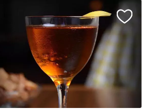
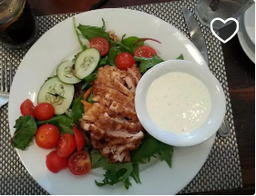
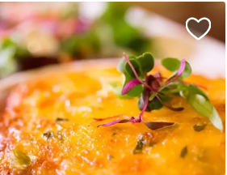

人民币（￥）
人民币（￥）- 手机端
- 发布客源/体验
- 故事
- 帮助
- 注册
- 登录
纽约的餐厅
|
FINE AMERICAN |
ECLECTIC AMERICAN |
CLASSIC FRENCH |
VEGAN CREPERIE |
FINE CHINESE |

洛杉矶的餐厅
|
AMERICAN | 
CRAFT COCKTAILS |
CASUAL MEXICAN |
农场直送 |
CASUAL MEXICAN |
哥伦比亚特区的餐厅
|
OYSTER BAR |
AMERICAN |
SUSHI BAR |
农场直送 |
ITALIAN PIZZERIA |
旧金山的餐厅
|
TEA TASTING |
JAPANESE GRILL |
SPANISH FRENCH |
CASUAL PIZZERIA | 
AMERICAN COMFORT |
旧金山的餐厅
|
CLASSIC FRENCH |
CLASSIC GERMAN |
MODERN STEAKHOUSE |
MODERN VIETNAMESE |
SPANISH TAPAS |
奥斯汀的餐厅
|
CLASSIC ITALIAN |
SEASONAL ITALIAN |
CLASSIC INDIAN |
TEX-MEX |
ITALIAN TRATTORIA |
查尔斯顿的餐厅
| 
AMERICAN COMFORT | 
SUSHI | 
AMERICAN COMFORT |
SOUTHERN SEAFOOD |
FRENCH COCKTAIL BAR |